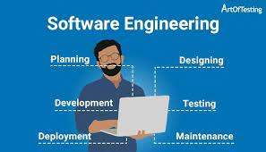

Throughout the course, I have learned so much about software engineering. From the basics of programming languages to complex frameworks and design patterns, I have gained a deeper understanding of the intricacies of web development. I am grateful for the opportunity to learn and apply these skills in real-life projects and assignments.
To be honest, I was flustered when I was asked to master JavaScript in a short period of time in the first week. Because the time was too short and I didn’t choose any courses about computer science in the last semester before taking this class.
The weekly WODs gave me a good opportunity to exercise. I failed at some wods at the beginning, but I slowly started to catch up with the rhythm and completed a lot of WODs. With the learning of Boostrap, meteor, and react, I have been able to delve deeper into the intricacies of web development. By exploring the capabilities and features of these powerful frameworks and librarie I am able to add more features to my website.

Teamwork is essential in software development. Communication is actually my weakness because English is not my first language. Sometimes I can’t express my thoughts excitedly. Assuming we don’t have coding standards, then when we do group projects, everyone’s code has its own characteristics, which is very unfavorable for other people’s reading. Coding Standards solves this problem nicely, Because of the use of eslint, In the process of the final project, our code is easy to understand, which saves a lot of communication time about each other’s code.
In the final project we also use the design pattern such as prototype pattern and singleton pattern. For example, the prototype pattern allows us to create new objects based on existing ones, reducing the need to write new code and improving performance.
In the end, I think this course is the closest to reality that I have ever been exposed to. It also pointed the way for my career.